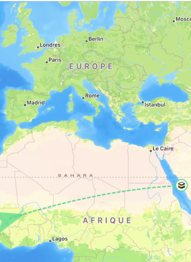

<!-- <ion-header>
    <ion-buttons slot="start" (click)="Retour()" style="margin-top: 2em;">
      <ion-icon name="arrow-undo" style="color: #fff;" size="large"></ion-icon>
    </ion-buttons>
    <ion-title size="large" style="padding-bottom: 0.3em;">Qhaba</ion-title>
</ion-header>

<ion-content [fullscreen]="true">

  <div class="body">
    <br>

    <div class="a">
      <a href="">Voir la carte</a>
    </div>

    <div class="image">
      <a href="">
        
      </a>
    </div>
  </div>
</ion-content>
 -->
<!-- methode 2 -->
<ion-content>
  <div class="center-container">
    <div class="boussole">
      <div class="aiguille" [style.transform]="'rotate(' + qiblaDirection + 'deg)'"></div>
      <button class="btn btn-nord">Nord</button>
      <button class="btn btn-est">Est</button>
      <button class="btn btn-sud">Sud</button>
      <button class="btn btn-ouest">Ouest</button>
    </div>
  </div>
</ion-content>

